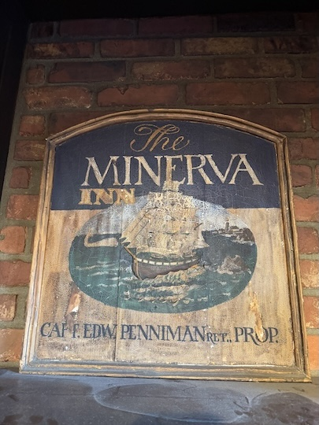

Wood Carvings

2010-MinervaInn.jpg - this sign was designed and painted by Ed Penniman. The boat, waves and frame were carved by MJP. It was executed in redwood. It now hangs in the Melville Tavern in Monterey, CA.